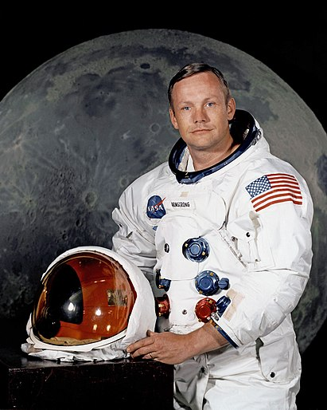

Програ́мма «Аполло́н» — программа пилотируемых космических полётов космического агентства США НАСА, принятая в 1961 году, с целью осуществления первой пилотируемой высадки на Луну, и завершённая в 1975 году. Цель программы была сформулирована президентом США Джоном Ф. Кеннеди в его речи 12 сентября 1962 года[1], и она была успешно решена 20 июля 1969 года, в ходе полёта «Аполлона-11» с высадкой на Луну Нила Армстронга и Базза Олдрина. Всего по программе «Аполлон» были совершены 6 успешных высадок астронавтов на Луну (последняя — в 1972 году). Эти шесть полётов по программе «Аполлон» на данный момент — единственные за всю историю человечества, когда люди высаживались на другом астрономическом объекте.